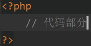
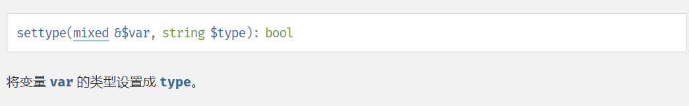
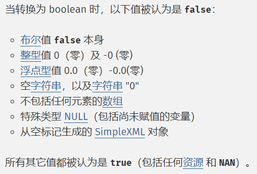
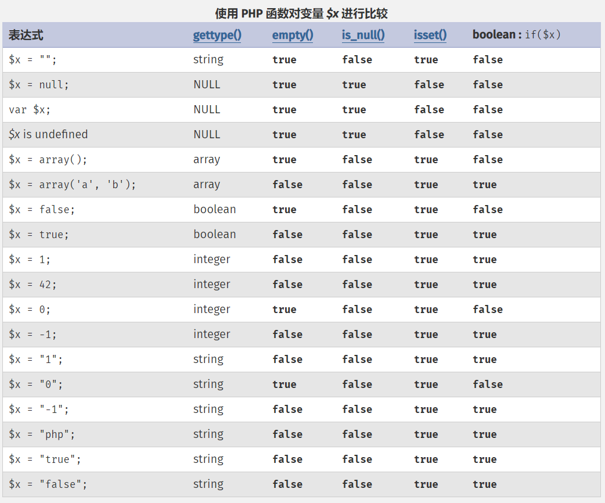
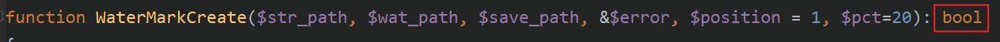

PHP基础笔记
一、简单概念
PHP的介绍：PHP是一种运行在服务器端的脚本语言，可以嵌入到HTML中
PHP的代码标记：[^注1]
PHP的语句分隔符：分号（;)
[^注1]:在纯PHP文件中一般不会写入?>，而若是要嵌入到HTML文件中，则必须添加?>。
二、变量
- 变量的命名规则：变量名必须以$开头
预定义变量：系统自动定义的变量，都是数组：

可变变量：可以试用一个变量$a保存另一个变量$b的变量名，则有$$a ==$b
变量传值：值传递和引用传递
（1）值传递：
<?php $a = 1; $b = $a; // 在数据段中重新开辟了一个地址，里面存放与$a指向的地址相同的值，将$b指向这个新开辟的地址 $b = 2; echo $a,$b; // 1 2（2）引用传递
<?php $a = 1; $b = &$a; // 将$b指向$a指向的数据段中的地址 $b = 2; echo $a,$b; // 2 2
- 内存四区
栈区
堆区
数据段
代码段
- 代码执行流程
- 代码装载：从脚本文件中读取代码，进行编译，将编译的结果（字节码）存放到代码段中
- 代码执行：从代码段中逐行读取代码，同时将变量保存的数据存储到数据段中，将数据段中数据对应的地址，存储到栈区中存储的变量名中
- 脚本执行结束：系统会回收所有的数据（栈区、代码段）
三、常量
定义（在定义时必须赋值）
（1）使用define( )函数定义
<?php define('PI',3.14)（2）使用const关键字定义
<?php const PI = 3.14常量的命名规则：通常使用大写字母且前端没有$符号，且可以使用特殊符号[^注2]
[^注2]:若使用了特殊符号则必须使用constant( )函数获取它保存的值
- 常用的系统普通常量：系统帮助用户定义的常量
PHP_VERSION：PHP版本号 PHP_INT_SIZE：PHP中整型所占的字节数 PHP_INT_MAX：PHP中整型所能表示的最大值
- 常用的系统魔术常量：系统帮助用户定义的常量，常量值会根据环境的变化而变化，但是用户不能改变
__DIR__：当前执行脚本在所在电脑上的绝对位置（不带有自身文件名） __FILE__：当前执行脚本在所在电脑上的绝对路径（带有自身文件名） __LINE__：当前变量所在行数 __NAMESPACE__：当前所属的命名空间 __CLASS__：当前所属的类 __METHOD__：当前所属的方法
四、数据类型
- PHP是一种弱类型语言，其变量本身没有类型。所以说PHP中的数据类型是指数据本身的类型。
- PHP中的八种数据类型 —— 三大类八小类
简单数据类型：
整型（int）：4个字节存储，表示整数类型
浮点型（float/double）：8个字节存储，表示小数类型或者int类型存不下的整数类型^注3
字符串型（string）：系统根据其长度自动分配空间，使用引号包含
布尔类型（bool）：ture 和 false
复合数据类型
对象类型（object）：存放对象
数组类型（array）：一次性存放多个数据
特殊数据类型
资源类型（resource）：存放资源数据（PHP外部数据，如：数据库、文件）
- 空类型（NULL）：不能运算
- 类型转换
- 强制转换的规则：在变量前增加一个括号，然后在里面写上对应的类型（对数据复制的内容进行转换，不会改变原有数据的类型）
- settype( )函数：会更改原有的数据类型

其它类型转布尔类型：

其它类型转数值：
- 布尔true为1，false为0
- 字符串转数值的特性：
- 以字母开头的字符串永远为0
- 以数字开头的字符串，取到碰到数字以外的字符为止（可以包含一个小数点，但不能同时包含两个）
- 类型判断
- 使用类型判断的一系列函数is_类型名( )，来判断类型，得到的是布尔类型
- 使用gettype( )函数，得到该类型对应的字符串
- 进制
在使用int类型的数据时，可以使用二进制、八进制、十进制、十六进制表示。^注4
二进制（bin）：0b + 二进制数
八进制（oct）：0 + 八进制数
十进制（dec）：十进制数
十六进制（hex）：0x + 十六进制数
进制转换函数举例：
二进制转十进制：bindec( )
十进制转十六进制：dechex( )
- 科学计数法
float + e + int ：表示float * 10 ^ (int)
- 变量比较表

empty( )：用于判断变量存储的值是否为空
is_null( ) 和 isset( )：用于判断变量本身是否存在
五、运算符
- 赋值运算符（
=）：在内存中开辟一个位置存储符号右边的值，并将这个开辟的内存地址赋值给符号左侧的变量 - 算数运算符：
+、-、*、/、%^注5
- 比较运算符：
>、>=、<、<=、==、!=、===、!==
==与!=：比较左边和右边的数据大小（如：123 == '123' 为true）
===与!==：比较左边和右边的数据大小和数据类型（如：123 === '123'为false）
- 逻辑运算符：
&&、||、!
A && B; => 若A为真，则执行B操作
A || B; => 若A为假，则执行B操作
（注：表达式A、B 必须有返回值）
- 连接运算符：
.、.=
.：拼接两个字符串
.=：相当于将拼接后的字符串赋值给左边的字符串
- 错误抑制符：
@
在PHP中，有一些错误可以提前预知，但是这些错误可能无法避免，但是又不希望报错给用户看，这可以使用错误抑制符处理，一般在生产环境中使用
- 三目运算符：即C中的
?:语句 - 自操作运算符：
++、-- - 位运算符：
&、|、~、^、<<、>>
<<：按位左移，相当于乘以2
>>：按位右移，相当于不会出现小数的除以2
- 运算符的优先级
参考文档)
六、流程控制
分支结构
- if-else语句
- switch-case语句
循环结构
for循环
while循环
do-while循环
foreach循环（处理数组）
<?php foreach($arr as $key => $value){ // 循环第i次执行，相当于将索引数组中的第i个元素赋值给$key，将$arr[$key]赋值给$value }foreach的实现原理：
- foreach重置数组指针指向首元素
- 进入foreach循环，通过指针访问指向的元素，将下标取出放在
$key中，将值取出放到$value中 - 指针后移
- 重复2和3，直到指针指向空
循环控制：break，continue
流程控制替代语法
PHP本身是嵌入到HTML中的脚本语言，需要在HTML中写一些关于判断或循环的结构语法。在需要PHP与HTML混搭时，可以使用PHP的替代语法
替代语法的规则：
将左大括号
{替换为:将右大括号
}替换为end + 起始标记;（如：while(A){B} 会被替换为 while(A): B endwhile;）
七、文件包含
文件包含的定义：在一个PHP脚本中，去将另外一个PHP文件包含进来，去合作完成一些事情
文件包含的分类：
向上包含（索要）：使用被包含文件中的内容，实现代码共享，一般在文件的最开始进行包含
向下包含（给予）：将自己的内容在被包含文件中使用，实现代码共享，一般在文件的末尾进行包含
文件包含的作用：使用协作的方式让多个脚本共同完成一件事情
文件包含的四种形式：
include：包含文件，重复包含同一文件会执行多次并因为重复定义报错
include_once：包含文件，且系统会自动判断文件是否已经包含过，保证一个文件只会被包含一次4
若使用include包含的文件找不到，则会报warning
require：与include相同
require_once：与include_once相同
若使用requite包含的文件找不到，则会报error
格式示例：include '被包含的文件名字' ^注6
- 文件加载时，被包含文件时单独编译的。若是被包含文件出现错误，原文件只有在执行到文件包含语句时，才会报错。^注7
补充说明——
PHP代码的执行流程如下：
1. 读取代码文件（PHP程序）
2. 编译：将PHP代码转换为字节码（生成opcode）
3. 使用zendengine来解析opcode，按照字节码的进行逻辑运算
4. 将运算结果转化为对应的HTML代码
- 文件加载的路径：使用绝对路径或相对路径都行、
嵌套包含时的路径问题：若使用
./或../包含其它文件A的文件B被另一个文件C嵌套，则./或../代表的目录可能会发生改变，即将文件C的目录作为当前目录，而不是文件B的目录，若B与C的目录不同，则会导致找不到文件A而出错，此时，就要用到绝对路径
八、函数
函数的定义方法
<? php function 函数名(参数){ 函数体; }可以再代码的任意位置定义函数，然后再代码的任意位置执行函数：因为在编译的时候，已经将函数编译为字节码存放到内存中了，所以可以再任意位置执行函数。
函数调用流程：
- 系统调用函数，会去内存中寻找该函数，判断函数是否存在
- 系统会在栈区开辟内存空间运行函数
- 系统会查看函数是否含有形参
- 系统会判断函数调用时是否含有实参
- 系统会将实参的值取出，赋值给形参，相当于给形参重新开辟了一段内存存储和实参相同的值（值传递）
- 执行函数体
函数调用默认为值传递，但是也可以使用引用传递（让函数拿到的外部数据，能够在函数内部改变）
基本定义语法：
<? php function 函数名(&参数){ 函数体; }返回值：使用return语句返回，且返回值可以是任意数据类型
变量作用域：
- 全局变量：用户在函数外部定义的变量，不允许在函数内部使用，生命周期直到脚本允许结束
局部变量：用户在函数内部定义的变量，只允许在当前函数内部使用，生命周期直到函数执行结束
超全局变量：系统定义的变量，没有访问限定[^注8]
[^注8]:系统会将所有的全局变量保存在超全局变量
$GLOBALS中，可以在函数内部通过数组的方式使用超全局变量$GLOBALS访问局部变量global关键字：在函数的内部和外部，对一个同名的变量使用同一块内存地址保存数据（函数内部使用）
- 若使用global关键字定义的变量在函数外部有同名变量，那么系统在函数内部使用global关键字定义的变量会直接指向函数外部同名变量指向的内存地址
- 若使用global关键字定义的变量在函数外部找不到同名变量，那么系统会自动在全局空间（即函数外部）定义一个与函数内部使用global关键字定义的变量指向同一个内存地址的同名变量
静态变量：
- 定义方法：使用static关键字定义
- 作用：跨函数共享数据（同一个函数被多次调用，静态变量在函数结束后并不会被删除，而会在下一次调用时，将上次函数执行结束的静态变量直接赋值给该静态变量，而原有给静态变量赋值的语句将无效）
- 原理：系统在编译时会自动为静态变量赋值，而函数在调用时，会自动跳过有static关键字的这一句代码
- 使用场景：统计函数被调用的次数、为了统筹函数多次调用得到的不同结果
可变函数：使用一个$变量保存函数名，则可以直接使用
$变量();的方式调用函数，一般在回调函数中使用。^注9
匿名函数：
定义语法：
<? php $变量 = function(){ 函数体 };调用语法：
<? php $变量();函数内部的匿名函数在函数执行结束后不会被释放。若函数内部的匿名函数在使用函数的局部变量，则该局部变量也不会被释放，因为在函数内部还有对应的函数（匿名函数）在引用，即形成了一个闭包，为了让我们在特定的环境下使用内部函数不会出错。
- 变量保存匿名函数，本质上是得到了一个闭包对象(closure)。
函数的返回类型：可加可不加

九、伪类型
伪类形：PHP中不存在的类型，是为了方便我们查看PHP操作手册而存在的
分类：
mixed：混合（任意）类型，只要是PHP中规定的类型即可
number：数值类型，即整型或浮点型
十、字符串
定义方式：
使用引号（单双皆可）定义：适用于比较短（不超过一行）的字符串
单引号字符串中能识别的转义字符只有
\'双引号字符串中不能识别的转义字符只有
\'，因为没必要双引号中因为能够区分变量和
\$字符，所以能够识别变量，而单引号不行。但是若$后的字符不是变量名，系统会报错。为了避免这种情况发生，我们一般给变量使用专业标识符进行区分。[^注10]
[^注10]:专业标识符就是给变量加上一组大括号，如：{$a}
heredoc结构化定义：定义没有双引号的双引号字符串
<?php $str = <<<EOD 字符串内容 EOD;nowdoc结构化定义：定义没有单引号的单引号字符串
<?php $str = <<<'EOD' 字符串内容 EOD;结构化定义语法：
- EOD代表边界符
- 在上边界符的后面不能有任何代码，包括注释
- 下边界符必须写在最左边顶格写，同时下边界符后面只能跟分号，不能跟其它任何东西
- 在两个边界符之间，所有的代码都将看作字符串本身，包括注释
字符串长度：
基本函数：
strlen()，使用strlen()会返回字符串的字节数，它争对ASCII交换码，此时一个中文会占3个字节若需要使用多字节字符串长度处理函数，则要加载PHP中的mbstring扩展（mb：multi bytes）
在php.ini中找到
extension = php_mbstring.dll，开启扩展重启apache
使用
mb_strlen()函数即可mb_strlen(string
$str, string$encoding= mb_internal_encoding()): [mixed]$str：为待处理的字符串$encoding：为字符集，默认为'ASCII'。处理中文使用 'utf-8' ，此时一个中文长度
字符串相关函数
- 转换函数
implode(分隔符, 数组)：将数组中的元素使用分隔符连接为一个字符串，若不指定分隔符，则不含分隔符explode(分隔符, 目标字符串)：将字符串按照指定的分隔符进行分割，得到数组str_split(字符串，字符长度)：按照指定长度拆分字符串得到数组
- 截取函数
trim(字符串, 待过滤的字符)：去除字符串首尾待过滤的字符，默认为空格，可以设定多个待过滤的字符ltrim(字符串, 待过滤的字符)：去除字符串开头的待过滤的字符，默认为空格，可以设定多个待过滤的字符rtrim(字符串, 待过滤的字符)：去除字符串末尾的待过滤的字符，默认为空格，可以设定多个待过滤的字符substr(字符串, 起始位置, 长度)：返回字符串对应的子串strstr(字符串，字串开始字符)：从字串开始字符第一次出现的位置开始截取到最末尾（可以用来取后缀名）
- 大小写转换函数
strtolower(字符串)：将字符串全部转换为小写strtoupper(字符串)：将字符串全部转换为大写ucfirst(字符串)：将字符串首字符转换为大写，若首字符不是字母，则不做操作
- 查找函数
strpos(字符串，查找的字符[，起始位置])：查找该字符串首次出现的位置strrpos(字符串，查找的字符[，起始位置])：查找该字符串最后一次出现的位置
- 替换函数
str_replace(子串, 子串的替换值, 母串)：将目标字符串中部分字符串进行替换
- 格式化函数
printf(字符串)/sprintf(字符串)：格式化输出 —— 与C语言相同
- 其它函数
str_repeat(字符串，重复次数)：重复某个字符串，不会修改原字符串str_suffle(字符串)：打乱字符串
- 转换函数
十一、数组
定义语法：
使用array关键字定义
$变量 = array(元素1, 元素2, 元素3, …);
使用中括号包裹数据
$变量 = [元素1, 元素2, 元素3, …];
隐形定义数组
$变量[下标] = 数据;
若下标不指定且数组为空，则默认从0开始。若在前面已经给该数组的某些元素赋过值，则下标不指定，默认从已赋值的下标最大者+1开始。
数组下标的特点：
数组的下标可以为整数或者字符串：
如果数组的下标都是整数，则为索引数组
如果数组的下标都是字符串，则为关联数组
如果数组的下标既有整数，又有字符串，则为混合数组
数组元素的顺序以放入的顺序为主，与下标无关
数字下标的自增长特性：从0开始自动增长，如果中间手动出现较大的下标，那么后面默认的自增长下标从最大的下标+1开始
特殊值下标的自动转换：
arr[false] => arr[0]
arr[true] => arr[1]
arr[NULL] => arr[""]
PHP中的数组类型没有限制，且数组长度没有限制
数组的存储位置是在堆区，会被分配为一块连续的内存
多维数组：数组中的元素就是数组，且PHP中的数组没有维度限制，但是一般不超过三维
异形数组：数组中的元素既有数组，又有数值，一般不使用，了解即可
数组的遍历方法：
使用foreach循环遍历一维数组（若为二维数组，使用foreach遍历外层数组，使用下标访问内层数组）
使用for循环遍历索引数组：使用
count($arr)得到数组长度while配合each和list遍历数组（注：each函数已经被废弃，此方法了解即可）
each()：获取当前指针指向元素的下标和值，并将其作为一个含有4个元素的数组输出，并将指针后移。4个元素的数组为：
arr( [0] => 下标值, [1] => 元素值, ["key"]=> 下标值, ["value"]=> 元素值 )
list()：list($var1,$var2, …) =$arr，将$arr数组中的元素按照下标从0递增的顺序批量赋值给( )中的变量，( )中的第一个变量对应$arr[0]，第二个变量对应$arr[1]。<?php while(list($key, $value) = each($arr)){ // 函数体 }
数组排序函数，会更改原数组：
sort()：按照键值顺序排序（下标会重排）rsort()：按照键值逆序排序（下标会重排）asort()：按照键值顺序排序（下标与值的对应关系不会改变）ksort()：按照键名顺序排序（下标与值的对应关系不会改变）krsort()：按照键名逆序排序（下标与值的对应关系不会改变）shuffle()：随机打乱数组元素（下标会重排）
数组指针函数：
reset()：重置指针，将指针指向数组首元素end()：重置指针，将指针指向数组尾元素next()：将指针下移，返回下一个元素的值prev()：将指针上移，返回上一个元素的值[^注11][^注11]: 当使用
next()和prev()将指针移出数组范围时，不能再通过next()和prev()将指针移回数组范围，只能使用指针重置函数reset()和end()将指针重置 ↩current()：获取当前指针指向的元素值key()：获取当前指针指向的下标值
数组相关函数：
count()：统计数组中元素的数量array_push()：向数组末尾加入元素（入栈）array_pop()：从数组末尾取出元素（出栈）array_shift()：从数组开头取出元素array_unshift()：向数组开头加入元素array_reverse()：翻转数组in_array(查找的值, 数组)：判断元素在数组中是否存在array_keys()：返回一个数组的所有下标（索引数组）array_values()：返回一个数组的所有值（索引数组）
十二、错误处理
定义：错误处理是指系统（或用户）在对某些代码进行执行的时候，发现有错误，就会通过错误处理的形式告知程序员
错误分类：
- 语法错误：用户书写的代码不符合PHP的语法规范，会导致编译不通过，代码不会执行（Parse Error）
- 运行时错误：代码编译通过，但是在执行过程中会出现一些条件不满足而导致的错误（Runtime Error）
- 逻辑错误：在编写代码时不够规范，导致程序在执行时得不到想要的结果
错误代号：（所有看到的错误代码在PHP中都被定义成了系统常量，可以直接使用）
- 系统错误：
- E_PARSE：编译错误，不会通过编译
- E_ERROR：致命错误，会导致代码不能继续执行，会在错误的位置处停下
- E_WARNING：警告错误，不会影响代码执行，但是可能得到意想不到的结果
- E_NOTICE：通知错误，不会影响代码执行
- 用户错误：用户在自定义错误除法时，会使用到的错误代号
- E_USER_ERROR：致命错误，会导致代码不能继续执行，会在错误的位置处停下
- E_USER_WARNING：警告错误，不会影响代码执行，但是可能得到意想不到的结果
- E_USER_NOTICE：通知错误，不会影响代码执行
- 其它：
- E_ALL：代表着所有的错误，通常在错误控制时使用，建议用于开发环境
注：所有的错误常量（代号），都由一个字节存储，每一种错误对应一个位。在错误控制时，一般使用位操作。
示例：
- 排除通知级别：E_ALL & ~E_NOTICE
- 只要警告和通知：E_WARNING | E_NOTICE
- 系统错误：
错误触发
程序运行触发：系统自动触发，针对语法错误和运行时错误
人为触发：知道某些逻辑可能会出错，从而使用对应的判断代码来触发相应的错误提示
使用到的函数：
trigger_error(string $error_msg, int $error_type = E_USER_NOTICE): bool
错误设置
错误显示设置
更改PHP配置文件（php.ini）
display_errors：更改是否显示错误
error_reporting：显示什么级别的错误
可以在运行的php脚本中设置
error_reporing( )：设置错误显示级别
ini_set(配置文件中的配置项, 配置的值)：使用函数修改php配置文件 [^注12]
[^注12]:在脚本文件中配置的配置项级别比配置文件中的级别要高
错误日志设置：在生产环境中，一般不显示错误给用户，但又希望捕捉到错误让后台程序员去修改，则需要把错误保存到日志文件中，这就需要设置php.ini文件，或在脚本中修改配置(ini_set)。
- 开启日志功能：log_errors = On
- 指定路径：error_log = 日志的保存路径
自定义错误处理
最简单的错误处理：使用
trigger_errors()函数，但是该函数不会阻止系统报错PHP系统中提供了一种用户处理错误的机制：用户在自定义错误处理函数后，将该函数增加到操作系统的错误处理句柄中，然后系统在发现错误后，会执行用户定义的错误函数。实现的方式就是使用
set_error_handler()错误处理函数set_error_handler()具体使用方法：详见PHP手册)示例：
<?php // 自定义错误处理机制 // 自定义错误处理函数 /* * @param1：$errno表示系统提供的错误代码，如：E_ALL、E_NOTICE等 * @param2：$errstr表示错误提示信息 * @param3：以上两个参数为必要设定的参数，其它参数可以没有 */ function my_error($errno, $errstr, $errfile, $errline){ // error_reporting()：若不加参数，表示获取当前系统设定的所有错误处理级别 if(!error_reporting()&$errno){ // 若遇到的错误不在系统要求显示的错误级别之中 return false; } switch ($errno){ case E_ERROR: case E_USER_ERROR: echo "Fatal error in file $errfile on $errline <br>"; echo "Error info : $errstr <br>"; break; case E_WARNING: case E_USER_WARNING: echo "Warning in file $errfile on $errline <br>"; echo "Error info : $errstr <br>"; break; case E_NOTICE: case E_USER_NOTICE: echo "Notice in file $errfile on $errline <br>"; echo "Error info : $errstr <br>"; break; } return true; } // 修改错误机制 set_error_handler('my_error');
十三、常用的系统函数
有关输出的函数
print()：输出格式化字符串print_r()：以易于理解的方式打印变量，一般用来打印数组
有关时间的函数
date()：按照对应的格式打印时间戳（若不给定时间戳，则打印当前时间）time()：获取当前时间的时间戳microtime()：获取当前时间的微秒级别的时间戳strtotime()：将任意英文格式的字符串转化为时间戳
有关数学的函数
max()：返回最大值min()：返回最小值rand()：指定区间得到一个随机整数mt_rand()：与rand()一样，但效率更高round()：四舍五入ceil()：向上取整floor()：向下取整pow()：乘方abs()：绝对值sqrt()：开平方根
有关函数的函数
function_exists()：判断指定的函数名字是否在内存中存在func_get_arg()：在自定义函数中去获取指定数值对应的参数，可以理解为指定的参数为所有参数数组的下标（从0开始）func_get_args()：在自定义函数中获取所有的参数（数组），下标从0开始func_num_args()：在自定义函数中获取参数的数量^注13
[^ 注11]:
处理脚本让浏览器按照指定字符集解析的方法：
<?php header('Content-type:text/html;charset=utf-8');